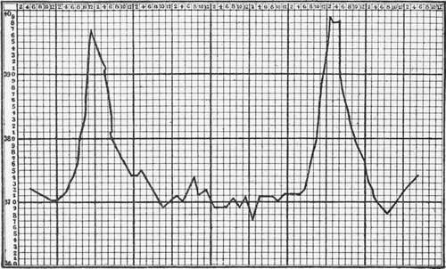
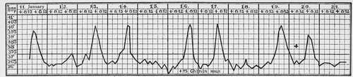
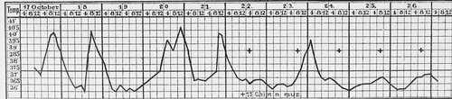
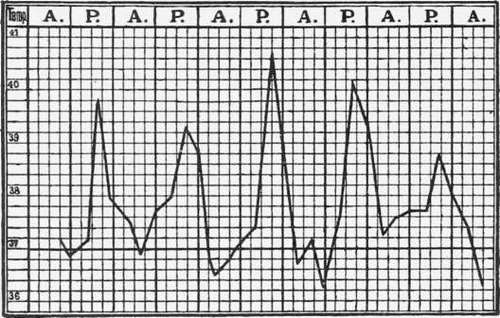

Quartan Fever, That Is, Fever Caused By The Quartan Parasites
Description
This section is from the book "Malaria, Influenza And Dengue", by Julius Mennaberg and O. Leichtenstern. Also available from Amazon: Malaria, influenza and dengue.
Quartan Fever, That Is, Fever Caused By The Quartan Parasites
It is a general, well confirmed fact that quartan is the least frequent of all malarial fevers. There are malarial districts where it does not occur at all. The following figures will best illustrate this:
Maillot counted in Bona (Algeria).... among 2338 malarial cases, 26 quartan fevers.
FinotinBlida..................... " 4211 " " 21
Durand de Lunnel in Tenes.......... " 625 " " 6 "
Osier in Baltimore................. " 616 " " 5 "
Laveran in Algiers................. " 311 " " 7 "
Griesinger in Tubingen............. " 414 " " 3 "
Among my 144 malarial cases there were 4 assured cases of quartan. A further 4 cases were, according to the blood examination, likewise quartan, but since they were treated in the ambulatory, their fever curve is unknown. Not one of these eight cases was acquired in Vienna. I may say, therefore, that in Vienna at the present time quartan fever does not arise autochthonously.
Crombie affirms that during a twenty two years' experience in India he observed but one case of quartan. [The recent researches of Stephens and Christophers have shown that in certain districts of India among the natives, quartan alone prevails, and it must now be considered to be common in India.-Ed.]
There are, so it seems, only a few places where quartan predominates. Trousseau stated that in Saumur quartan, in Tours only tertian, occurred. According to Calundruccio, in Gebbia Liberto near Fiumefreddo (Sicily) only quartan is seen. According to all authorities in Seul, quartan and tertian are equally common; in the southern provinces of C'orea quartan is much more frequent than tertian.
The assertions of many older writers and some recent ones that quartan appears only after repeated relapses is, from my observations, incorrect. Quartan fever occurs as a primary infection, just as tertian or quotidian.
The type of the simple quartan fever-that is, the fever caused by one single generation of quartan parasites-may be represented in the following way: 1001001, etc. Between two paroxysmal days, therefore, there occur two days free from paroxysms.
A second type of quartan fever arises as a result of the presence of two generations of quartan parasites. These commonly show a difference in age of twenty four hours. This is represented, therefore: 11011011. This type is characterized by two paroxysmal days following each other, and then a day free from paroxysms.
This type is very rare, and there are experienced investigators (for instance, Griesinger) who have never observed it and consider its occurrence questionable.* I have had the good fortune to observe two such cases, the typical curves of which left no doubt as to their significance (Figs. 19 and 20).
A third type occurs when three generations with a 24-hour age interval circulate in the blood: 1111111111. It is, therefore, clinically a quotidian type.
Fig. 18.-Simple Quartan (after Silvestrini).
In quartan fever the paroxysm is usually fully developed and the temperature often reaches considerable heights. The curve rises quickly and falls quickly, so that a point is made, yet a disturbance' may occur, making a double summit (Fig. 20). This is explained on the assumption that the sporulation of a part of the parasites occurs somewhat earlier than that of the remainder.
The duration of the paroxysm is ordinarily six to twelve hours. Only rarely are the paroxysms so prolonged that the second appears before the first has terminated, giving rise to a subintrant quartan. This occurrence is almost confined to plural quartan infection (especially triple quartan). It is a "benigna continuitas" (Torti).
* The plural quartan type was recognized even by the ancients. Celsus speaks of "Duae quartanse" and of "Febris quotidiana, quae ex quartanse facta est" (Lib. iii, Cap. xvi and xvii).
Fig. 19.-Double Quartan.
Fig. 20.-Double Quartan.
A change of type in quartan fever is possible only in the ways described for the three types, and a transformation of quartan into tertian, or vice versa, without the occurrence of a new infection, is impossible. The older writers, like Griesinger, and the more recent ones, like Hertz, follow only a hypothetic outline when they write that tertian may "go over into" quartan by postponement, and this by anticipation into tertian. I consider this as unlikely as that a typhoid fever should "go over into" a miliary tuberculosis. From among neither my own observations nor those of others have I ever been able to find anything that would justify such an idea.
Fig. 21.-Triple Quartan (from Marchiafava and Bignami).
The other associated symptoms of quartan fever remain within the limits prescribed in general to this group of fevers. On the part of the nervous system we frequently see headache, brightness of the eyes, somnolence, light twitchings in the region of the facial nerve, mild delirium, etc. Vomiting or diarrhea is frequently present, as is likewise dyspnea during the cold stage. Anemia occurs and develops the more rapidly the more numerous the generations of parasites and the greater the number of parasites in each generation.
Quartan has the reputation of particular obstinacy in regard to relapses. Unfortunately, there are no statistics on this point. I consider it possible that the long intervals predispose to a less energetic therapy than is necessary for the prevention of a relapse. In my experience, at least, the effect of quinin is as evident in quartan as in tertian. Only a large number of statistics could show if the old Roman saying, "Quartana te teneat," is or is not justified in the age of quinin. Yet from the experiences of the old writers it may be concluded that of all malarial infections, quartan shows the least inclination to spontaneous recovery. It appeared, therefore, to some observers as almost incurable.
Continue to:
- prev: Fevers Caused By Golgi's Common Tertian And Quartan Parasites
- Table of Contents
- next: Tertian Fever-Fever Caused By The Common Tertian Parasites
Tags
mosquito, malaria, influenza, dengue, symptoms, outbreaks, diseases, hemoglobinuria, infections